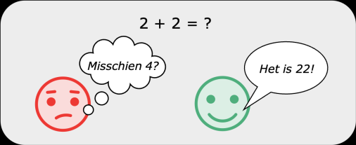
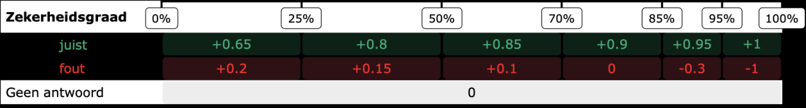
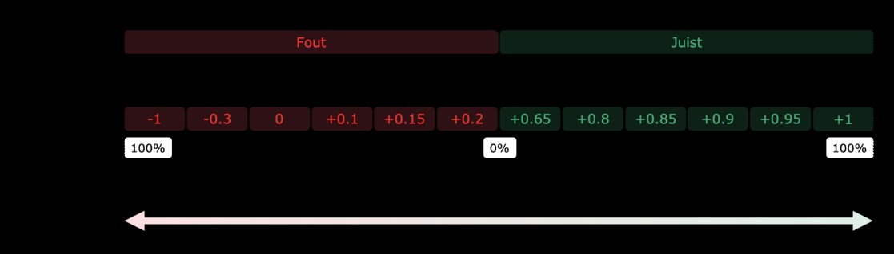
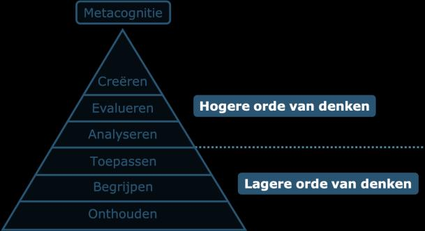

Inhoud en situering
Inhoud
Beste leerkrachten,
Ontdek in deze opleidingsmodule een aantal leerpaden die jullie de nodige inzichten verschaffen in:
- Het opstellen van goede meerkeuzevragen (met correctie volgens zekerheidsgraden*)
- Het coachen van studenten hun antwoordgedrag
Veel succes!
Auteurs: Sterre Warson en Jinte Buntinx, Mevr. Lien Vanmol, Prof. dr. Jean-Michel Rigo, Prof. dr. Anouk Agten
Situering
In het secundair onderwijs krijgen evaluaties met meerkeuzevragen een steeds prominentere rol. Bij evaluaties met meerkeuzevragen worden antwoorden meestal als juist of fout beoordeeld, zonder rekening te houden met de overtuiging waarmee de student geantwoord heeft. Toch is het belangrijk om een onderscheid te maken tussen kennis ("Ik weet") en geluk ("Ik denk").

Traditionele correctiesystemen (bv. giscorrectie, hogere cesuur, …) worden vaak gebruikt om te corrigeren voor geluk. Een andere, minder gebruikte, methode is het gebruik van zekerheidsgraden of 'certainty-based marking' (CBM). Hierbij worden leerlingen niet enkel gevraagd om een antwoordmogelijkheid te kiezen, maar moeten ze ook aanduiden hoe zeker ze zijn van hun antwoord. Het scoren van de vragen gebeurt via een matrix waarbij een hoge zekerheid leidt tot een maximum aan beloning of bestraffing en een lage zekerheid niet leidt tot afstraffing, maar ook minder punten oplevert bij een juist antwoord.

CBM biedt zo de mogelijkheid om een eerlijker evaluatiesysteem aan te bieden in vergelijking met traditionele evaluaties met meerkeuzevragen. Daarnaast kan door het gebruik van CBM een fijnmaziger beeld van de prestaties van leerlingen verkregen worden. Het belangrijkste voordeel is dat de combinatie van het scoren van een antwoord en de graad van zekerheid een subtielere diagnose kan maken over de bekwaamheid van de leerling. Hierdoor is er meer differentiatie en persoonlijke feedback mogelijk.

CBM is zeker geen los concept voor evaluatie, maar moet bekeken worden in de bredere context van 'confidence-based learning', waarbij leerlingen aangezet worden om bij onzekerheid bijkomende informatie te gaan zoeken of bepaalde leerinhouden opnieuw te studeren. Het gebruik van CBM leidt hierdoor niet alleen tot een hogere orde van denkvaardigheid, maar zet leerlingen ook aan tot meer zelfreflectie. Leerlingen gaan zichzelf tijdens het leerproces reflectieve vragen stellen zoals: "Hoe zeker ben ik van mijn opgedane kennis?" en "Ben ik zelfverzekerd op basis van kennis of overschat ik mezelf?" die hen helpen om hun eigen leerproces beter te begrijpen en kritisch te evalueren. Regelmatige toetsing (formatief of summatief) is daarbij een belangrijke voorwaarde, omdat het leerlingen de kans geeft om inzicht te krijgen in hun leerontwikkeling en eventuele misvattingen tijdig te corrigeren.

Taxonomie van Bloom (Bloom et al., 1956), aangevuld met het niveau van metacognitie dat bereikt kan worden via CBM.
Daarnaast heeft het gebruik van CBM ook een belangrijk voordeel op maatschappelijk vlak, doordat leerlingen bij het beantwoorden van meerkeuzevragen met zekerheidsgraden ook systematisch worden aangezet om hun eigen kennis te evalueren. CBM daagt leerlingen uit zich meer bewust te zijn van de grenzen van hun eigen kennis. Dit is uiteraard belangrijk in een maatschappij waarin we steeds vaker de betrouwbaarheid van informatie die ons bereikt, moeten beoordelen (denk bijvoorbeeld aan 'fake news', 'phishing', 'artificial intelligence', ...).
Aan de Universiteit Hasselt wordt het gebruik van zekerheidsgraden reeds enkele jaren toegepast binnen de gezondheidsopleidingen van de faculteiten Gezondheid- en Levenswetenschappen en Revalidatiewetenschappen. Door leerlingen in de doorstroomfinaliteit binnen het secundair onderwijs al te laten kennismaken met deze evaluatievorm, leren zij hun eigen kennis bewuster inschatten en verantwoorden. Dit draagt bij tot een betere voorbereiding op evaluatievormen waarmee ze in het hoger onderwijs mogelijks geconfronteerd worden.
Via deze opleidingsmodule wordt ondersteuning aangeboden bij de implementatie van evaluaties met CBM in het secundair onderwijs. Als leerkracht wordt je getraind in het opstellen van goede meerkeuzevragen en leer je het antwoordgedrag van jouw leerlingen te analyseren.
Daarnaast is er een online opleidingsmodule voor leerlingen voorzien. Verwijs leerlingen naar deze module zodat zij leren werken met het nieuwe evaluatiesysteem en hun studiegedrag kunnen aanpassen naar een meer zelfregulerend leerproces. Op die manier ontwikkelen zij een realistischer beeld van hun eigen bekwaamheden op het moment van de evaluatie.